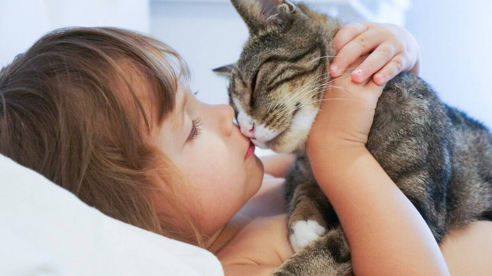

Importância de ter um gato:
Companhia e Afeto
Gatos podem ser ótimos companheiros, oferecendo conforto e afeto. Eles formam laços emocionais com seus tutores e são conhecidos por demonstrar carinho de maneira sutil, como ronronando ou se esfregando.
Gatos podem ser ótimos companheiros, oferecendo conforto e afeto. Eles formam laços emocionais com seus tutores e são conhecidos por demonstrar carinho de maneira sutil, como ronronando ou se esfregando.
Redução de Estresse e Ansiedade
Estudos mostram que a presença de um gato pode ajudar a reduzir o estresse e a ansiedade. O ato de acariciar um gato, ouvir seu ronronar ou simplesmente observá-lo pode ter um efeito calmante no ser humano.
Estudos mostram que a presença de um gato pode ajudar a reduzir o estresse e a ansiedade. O ato de acariciar um gato, ouvir seu ronronar ou simplesmente observá-lo pode ter um efeito calmante no ser humano.
Outros Benefícios
Além de companhia e redução do estresse, gatos podem ajudar a manter a casa livre de pragas e oferecem um senso de rotina e responsabilidade.
Além de companhia e redução do estresse, gatos podem ajudar a manter a casa livre de pragas e oferecem um senso de rotina e responsabilidade.
Aspectos Emocionais
Gatos podem ser uma fonte de conforto emocional e são conhecidos por melhorar a saúde mental de seus tutores.
Gatos podem ser uma fonte de conforto emocional e são conhecidos por melhorar a saúde mental de seus tutores.
Benefícios Físicos
A interação com gatos tem sido associada à redução da pressão arterial e do risco de doenças cardíacas. Além disso, o ronronar dos gatos está relacionado à cura de ossos e tecidos em humanos devido à sua frequência sonora.
A interação com gatos tem sido associada à redução da pressão arterial e do risco de doenças cardíacas. Além disso, o ronronar dos gatos está relacionado à cura de ossos e tecidos em humanos devido à sua frequência sonora.
Independência
Comparados a outros animais de estimação, como cães, gatos são mais independentes. Eles não exigem tanto tempo e atenção constantes, tornando-os ideais para pessoas com rotinas ocupadas.
Comparados a outros animais de estimação, como cães, gatos são mais independentes. Eles não exigem tanto tempo e atenção constantes, tornando-os ideais para pessoas com rotinas ocupadas.
Controle de Pragas
Historicamente, gatos foram apreciados por sua habilidade de controlar pragas como ratos e insetos. Mesmo domesticados, muitos gatos ainda mantêm esse instinto, ajudando a manter a casa livre de pequenas pragas.
Historicamente, gatos foram apreciados por sua habilidade de controlar pragas como ratos e insetos. Mesmo domesticados, muitos gatos ainda mantêm esse instinto, ajudando a manter a casa livre de pequenas pragas.
Personalidade e Carisma
Cada gato tem uma personalidade única. Alguns são brincalhões, outros são mais reservados, mas todos têm uma maneira especial de conquistar seus tutores, criando uma conexão única.
Cada gato tem uma personalidade única. Alguns são brincalhões, outros são mais reservados, mas todos têm uma maneira especial de conquistar seus tutores, criando uma conexão única.